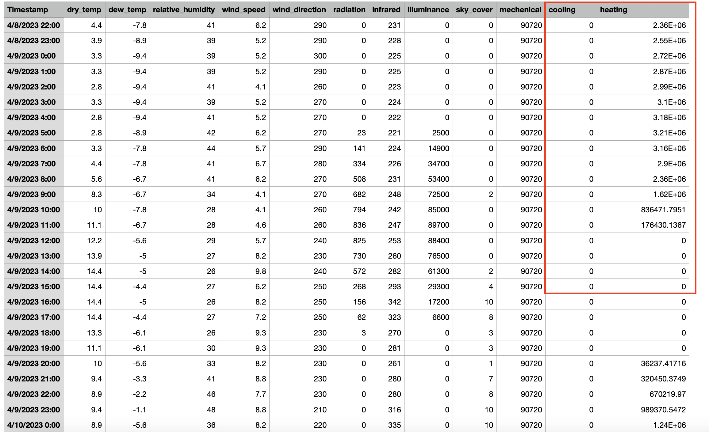

Environmentally Responsive Façade
The project focuses on the development of an environmentally responsive building façade prototype, using a micro-controlling system and data-driven machine learning techniques to regulate the mechanical operation of the façade.
Through systematic exploration of machine learning algorithms, the data-driven approach helps the building façade operate efficiently in response to changing environmental conditions.
Machine
The machine mainly includes two parts: the sensors and mechanical movement.
Senosrs
Several sensors are used to obtain both indoor and outdoor realtime data and stored the data in 5-minute intervals into Firebase.
The weather parameters include indoor and outdoor conditions regarding temperature, relative humidity, air pressure, luminance, and solar radiation.
Sensors
Skipping the research on the complex processes of jumping and converting between python and arduino codes,
I chose the Firebase as a transfer station that connects my python and arduino codes.
Store real-time data into Firebase
Send Operational Instruction from python to Firebase
Operational Instruction in Firebase
Get instruction from Firebase in arduino
Sending the real-time data to Firebase was not hard,
but I did spend some time to figure out how to generate the current timestamps in arduino and send them to Firebase together with the corresponding weather data as well.
The corresponding timestamp is important for the machine learning process because weather information is very time-sensitive.
Timestamps
Other than the real-time data collected from sensors,
the machine learning process also incorporates simulation data that is obtained from grasshopper climate studio.
Through the energy simulation, it provides with some predictions regarding energy consumption of winter heating as summer cooling.
Energy Simulation

Dataset
Mechanical Movement
The machine itself is very simple. It is basically using several stepper motors to drive the horizontal movements of each folding unit.
The structure of the machine is pretty straightforward, with wood supportors/columns and 3d-print connectors.
Structure
Connectors
Deciding the material of the folding structure is quite hard.
Intially I tried plastic, but it requires lots of forces to be folded.
I also considered using the vacuum paper and
So I ended up using the transparent paper for now.
But I still don't like this material. It is fragile and not applicable to the building material in real life.
I will do more research on the folding materials later.

Materials

Materials
The folding paper and wooden rods are connected via hinges.
Hinges

Hinges
Idealy each unit should be driven by two motors in the same speed on the upper and lower sides,
but this sounds very intense in terms of electricity consumption and machine simplicity.
So I chose to use only one motor for each folding unit for now.
The operational mechanism is similar to a conventional drawing machine,
wherein a threaded rod and lead screw facilitate the translation of motor rotation into precise horizontal motions.
The lab was facing material shortages including lead screws and brackets, but it was not hard to design and 3d print them from scratch.

Stepper Motors
Lead Screw and Brackets
The structure moves at a deliberately slow pace,
making it hard to notice changes quickly.
While this may not seem particularly exciting for a classroom demonstration,
it corresponds to the real-life scenarios where kinetic facades operate at lower frequencies and velocities.
Each folding unit is independently powered by separate motors,
with its own distinct speeds and travel distances tailored to their unique requirements.
These parameters are determined by Python machine learning outcomes,
which analyze optimal opening angles and durations for each unit.
Such individualized operation is importatn as units are situated in different locations and might have different effects on indoor environments.
For example, units positioned at lower levels may need to minimize direct sunlight exposure to occupants seated at study desks, thus necessitating nuanced adjustments to their movements.
The machine

Movement